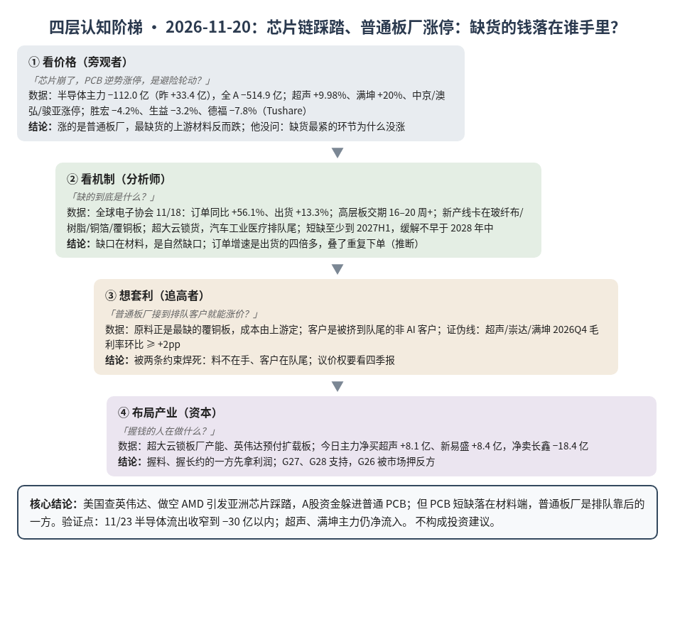
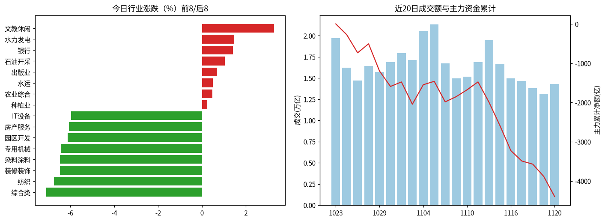
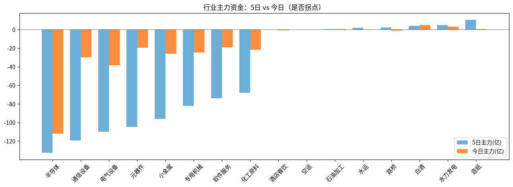

A股投研日报 · 2026-11-20（四层认知版）
- 主线
- 美国查英伟达、做空 AMD 引发亚洲芯片踩踏，A股资金只躲进“实物缺货”的普通 PCB
- 最重要变化点
- 半导体主力由 +33.4 亿转为 −112.0 亿；超声电子、满坤科技等普通板厂涨停，全 A −514.9 亿
- 机制含义
- 卖的是“受美国政策和 AI 估值牵连”的链，买的是材料短缺；但普通板厂是排队靠后的一方，议价权未经验证
- 下一个观察点
- 11/23 半导体主力流出收窄到 −30 亿以内；仍 ≤ −100 亿则踩踏未完
本报告为基于公开数据的研究分析，不构成投资建议。
方法：四层认知阶梯 + 历史周期律。数据 Tushare（见附录）。不构成投资建议。
今日市场概况
上证 −1.23% 收 3,533.79；创业板 −3.54% 收 2,212.13（20 日 −17.58%）；科创50 −3.12%，中证1000 −4.89%，只有上证50 +0.45%。成交 14,311 亿元，是 20 日均 16,383 亿元的 87%；上涨仅 313 家（5.6%），个股中位数 −5.1%。全 A 主力 −514.9 亿元，连续第 7 日流出。流入居前：白酒 +4.8 亿、文教休闲 +4.4 亿、铜 +3.9 亿；流出居前：半导体 −112.0 亿、电气设备 −38.6 亿、通信设备 −29.7 亿（Tushare）。海外：美股 11/19 三大指数均跌超 2%，费城半导体 −2.41%（源）；美债 10 年期 11/19 收 5.04%，连降四天（源）；KOSPI −5.21% 收 4,869.96，两市卖出侧车，外资连续第 6 日净卖（源）；DDR5 16Gb 现货 60.667 美元，持平（源）。
变化点
世界观定位：阶段不变（三国→楚汉过渡带），回退条件不变。世界指标今日天气：整体多云：钱开始变紧、股市偏贵偏热、AI 链有裂缝、中国经济还没回暖，留意。本周变化：③「股市贵不贵、热不热」🔴→🟡；今日无新提醒，④ 问仍因 CoreWeave CDS 约 1,113.5bp 亮黄。原型：2021 年缺芯，大户先锁货、小户排队，订单远超出货，之后一年砍单。
和昨天、上周比：昨天半导体是唯一流入的硬件板块，今天流出 −112.0 亿，比上周五（11/13）的 −77.2 亿还大；全 A −514.9 亿接近上周五 −595.2 亿。昨天“有国内晶圆的涨”只剩中芯 +2.6% 守住，华虹 −5.2%、长鑫 −6.2%（主力 −18.4 亿）。
看价格：「芯片崩了，PCB 逆势涨停，是避险轮动？」涨停的是普通板厂（超声 +9.98%、满坤 +20%、中京、澳弘、骏亚），AI 板龙头和上游材料反而跌：胜宏 −4.2%、生益 −3.2%、德福 −7.8%。他没问：缺货最紧的环节为什么没涨。
看机制：「缺的到底是什么？」全球电子协会 11/18 预警：截至 9 月订单同比 +56.1%、出货 +13.3%，高层板交期 16–20 周以上；新产线卡在玻纤布、树脂、铜箔、覆铜板这些材料；超大云厂商在锁货，汽车、工业、医疗排到队尾；短缺至少到 2027 上半年，实质缓解不早于 2028 年中（源）。缺口在材料，是自然缺口（扩产以年计）；订单增速是出货的四倍多，里面叠了一层重复下单推断。协会自己也提醒别重复下单、防 2027 年需求回调。风险敞口接口：复核后有效断供 Δ$≈0。
想套利：「普通板厂接到排队客户，就能涨价」。被两条约束卡住：它们的原料正是最缺的覆铜板，成本由上游定（G26）；它们服务的恰是被挤到队尾的客户，有订单不等于拿到料。毛利能不能扩，要看四季报。
布局产业：握货的一方在锁长约：超大云锁板厂产能，英伟达此前预付扩载板（G27 已有证据）。今天主力净买超声 +8.1 亿、新易盛 +8.4 亿，净卖长鑫 −18.4 亿。G27、G28 读数支持；G26 被市场押反方，证伪仍看毛利率。
判断：美国为什么同时查英伟达、AMD？11/19 规则管住了海外代工和租算力，剩下的漏洞是转卖和固件支持；推断下一步是追责个案、扩实体清单，美股 AI 估值先付代价。对中国：芯片链短期被动挨打，PCB 材料是少数中国有产能、对方缺货的环节。
中长期展望（3–12 个月与 2027）
3–12 个月：AI 链的硬约束从芯片政策门移到实物材料：PCB 材料短缺至少到 2027 上半年（G27）；订单远快于出货，2027 下半年扩产最集中的环节先松（G28）。「AI 链」问仍黄。
2027：P038、P051（PCB 不被列为出货限制）概率不动；P023 仍是总闸门。
什么会改变展望：①英伟达、鸿海、广达任一家把 PCB/覆铜板列为出货限制（G21 证伪）；②超声、崇达、满坤 2026Q4 毛利率环比 ≥ +2pp（G26 证伪）；③四大云 2027 指引合计 <8,500 亿美元。
七、明日/本周验证点（可证伪）
- 11/23 半导体主力流出收窄到 −30 亿以内；仍 ≤ −100 亿则踩踏未完。
- 11/23 超声电子、满坤科技主力合计仍净流入；转为合计流出超 5 亿，则今天只是题材一日游。
- 至 11/27 KOSPI 收回 5,000 点，外资停止连续净卖。
- 至 11/27 DDR5 16Gb 现货跌破 58.85 美元（较 60.667 跌 3%）。
附录 A：机会表、检查清单、验证点回顾、风险复核
机会表（产业/环节层面，不构成投资建议）
| 环节 | 变化信号 | 认知层级 | 关键风险 / 证伪 |
|---|---|---|---|
| PCB 上游材料（电子布、树脂、铜箔、覆铜板） | GEA：新产线卡在材料；订单 +56.1% vs 出货 +13.3% | 第 2→4 层 | 重复下单回吐；2027 年 Low-Dk 布报价环比跌 ≥15%（P042） |
| 普通多层板厂 | 预警当日涨停，市场押议价权 | 第 3 层：待验证 | 2026Q4 毛利率环比未 ≥+2pp，则涨停只是题材 |
| 国产存储、封测 | 跟随韩美芯片股踩踏：长鑫 −6.2%、长电 −9.5%、通富 −10.0% | 第 3 层：陷阱 | 现货价未跌（DDR5 60.667 持平），若下周转跌则基本面跟上 |
检查清单应用
- 缺口性质：材料端是自然缺口（玻纤布、铜箔扩产以年计）；订单、出货增速 56%/13% 之差里有周期性的重复下单成分；芯片链今天的跌是人为（政策调查）+ 估值。
- 替代弹性：非 AI 客户短期难换供应商（认证周期长），协会建议认证替代材料；普通板厂对覆铜板几乎没有议价权。
- 领先 vs 滞后：领先＝订单/出货比、高层板交期、电子布与铜箔报价、主力资金；滞后＝板厂季报毛利率、股价。
上一交易日验证点回顾（11/19 → 11/20）
| # | 验证点 | 读数 | 判定 |
|---|---|---|---|
| 1 | Anthropic 首日收盘 ≥83 美元 | 开盘 111.50、收涨 17%（约 97 美元，推算）；但美股随即跌超 2%（源） | 命中 |
| 2 | 半导体主力连续第 4 日净流入 | −112.0 亿 | 未命中 |
| 3 | 至 11/20 中芯、华虹公开确认 2027 调价 | 本周无新确认（华虹 11/06 称 2027 年均价仍升、不激进） | 未命中 |
| 4 | 本周 DDR5 16Gb 跌破 58.85 美元 | 60.667（11/20） | 未触发 |
海外事件说明：英伟达 11/19 收到加州检察长调查传票（源）；做空机构 Hunterbrook 称 AMD 固件流向被列入实体清单的浪潮信息，AMD 否认，股价 −7.72%（一方称，源）；美众议院外委会公开 BIS 对华许可记录，AMD 申请 60 万颗、获批 30 万颗仍未发货（源）。
供应链风险敞口（人工复核版）：脚本版见 risk_section_20261120.md。口径为 GB300/NVL72 当量柜年化系统价值；Δ$ 为事件类型假设模板，仅用于排序，非预测。脚本 2 条，误匹配 2 条（1 条为送样问答，1 条为股市抛售新闻）。复核后今日有效断供 Δ$≈0，基线维持年化 EL 57.7 亿美元（10/21）。采集降级：GDELT 限流或 0 篇；巨潮公告匹配未恢复。
总账（今日已改）：G21、G27、G28 追加支持证据，G26 追加削弱证据，均为 GEA 11/18 预警；状态与概率不改（证伪线未触发，G26 证伪看四季报毛利率）。
个股读数说明：超声、满坤、中京、澳弘、骏亚、胜宏、生益、德福、中芯、华虹、长鑫、长电、通富、新易盛的涨跌幅与主力净额来自 Tushare daily / moneyflow（11/20），只用来说明资金方向，不构成个股买卖建议。
世界指标数据说明：今晚 update.py 数据源 15/15 成功（20:15 运行，先于日报取数，未并发）；AI 泡沫监控页阶段读数「一顶后回撤」。

一句话总结：大户锁货、小户排队，缺货的钱先落在握料的人手里，不在排队的人手里。
本报告为基于公开数据的研究分析，不构成任何投资建议。
附录：市场数据（证据底稿）


| 收盘 | 今日% | 5日% | 20日% | MA20 | 成交(亿) | |
|---|---|---|---|---|---|---|
| 上证指数 | 3,533.79 | -1.23 | -2.77 | -4.25 | 3,636.54 | 7,025.74 |
| 深证成指 | 10,256.39 | -3.09 | -6.49 | -12.14 | 11,043.37 | 3,575.97 |
| 创业板指 | 2,212.13 | -3.54 | -8.82 | -17.58 | 2,453.47 | 1,372.51 |
| 科创50 | 1,231.09 | -3.12 | -3.80 | -8.50 | 1,249.49 | 919.45 |
| 上证50 | 2,785.92 | 0.45 | 0.39 | 1.02 | 2,772.26 | 1,572.36 |
| 沪深300 | 3,954.57 | -0.76 | -1.54 | -3.67 | 4,034.49 | 4,411.08 |
| 中证500 | 6,006.08 | -3.93 | -7.11 | -11.86 | 6,471.39 | 2,329.81 |
| 中证1000 | 5,648.63 | -4.89 | -11.15 | -16.12 | 6,346.75 | 2,571.31 |
行业资金热力（按5日主力净额排序，前8/后8）
| industry | 今日% | 5日% | 20日% | 今日主力(亿) | 5日主力(亿) | 资金连续天数 |
|---|---|---|---|---|---|---|
| 造纸 | -5.1 | -9.7 | -3.2 | 0.5 | 10.3 | 15.0 |
| 水力发电 | 1.5 | 3.5 | 2.1 | 3.2 | 4.6 | 1.0 |
| 白酒 | -0.2 | -1.2 | 11.7 | 4.8 | 4.1 | 1.0 |
| 路桥 | -3.8 | 4.4 | 24.0 | -1.3 | 2.0 | -2.0 |
| 水运 | 0.5 | 2.3 | 0.9 | -0.4 | 1.9 | -2.0 |
| 石油加工 | -0.8 | -2.6 | 2.6 | 0.5 | 0.4 | 3.0 |
| 空运 | -2.2 | -0.8 | 9.3 | 0.1 | 0.2 | 2.0 |
| 酒店餐饮 | -4.4 | -5.2 | 7.7 | -0.6 | -0.1 | -2.0 |
| 半导体 | -5.5 | -9.2 | -5.5 | -112.0 | -132.6 | -1.0 |
| 通信设备 | -5.0 | -14.5 | -32.6 | -29.7 | -119.6 | -2.0 |
| 电气设备 | -4.5 | -11.3 | -6.2 | -38.6 | -109.9 | -8.0 |
| 元器件 | -3.6 | -10.8 | -19.4 | -19.6 | -105.0 | -2.0 |
| 小金属 | -5.0 | -13.9 | -13.6 | -26.2 | -96.4 | -7.0 |
| 专用机械 | -6.4 | -17.3 | -14.5 | -25.0 | -82.0 | -2.0 |
| 软件服务 | -3.4 | -8.5 | -2.3 | -19.4 | -74.2 | -2.0 |
| 化工原料 | -4.4 | -9.8 | -7.1 | -21.6 | -68.1 | -11.0 |
市场情绪时间序列（近10日）
| trade_date | 成交(亿) | 上涨占比% | 主力净额(亿) | 个股中位涨跌% |
|---|---|---|---|---|
| 20261109 | 14945.5 | 40.2 | 132.1 | -0.3 |
| 20261110 | 15167.5 | 76.7 | 175.5 | 1.3 |
| 20261111 | 16886.9 | 63.5 | 201.5 | 0.6 |
| 20261112 | 19458.7 | 15.7 | -516.5 | -1.6 |
| 20261113 | 16670.7 | 13.7 | -595.2 | -2.0 |
| 20261116 | 14941.6 | 20.4 | -640.0 | -2.1 |
| 20261117 | 14675.2 | 23.8 | -264.0 | -1.3 |
| 20261118 | 13800.2 | 23.6 | -80.3 | -1.2 |
| 20261119 | 13145.8 | 11.6 | -310.4 | -2.6 |
| 20261120 | 14311.1 | 5.6 | -514.9 | -5.1 |
今日上涨313家/下跌5236家，涨幅≥9.8% 34家、跌幅≤-9.8% 190家¹。
龙虎榜侧写：机构专用席位合计 -4.26 亿；净买入居前 中嘉博创(+1.74亿)、凡拓数创(+1.15亿)、超声电子(+0.87亿)，净卖出居前 粤芯半导体(-3.46亿)、洪都航空(-2.24亿)、襄阳轴承(-1.74亿)。 沪深股通活跃股：成交前五为宁德时代、贵州茅台、中际旭创、招商银行、寒武纪（成交额≠净买入）。
注：¹涨跌停为按±9.8%阈值近似（limit_list_d无权限）。²行业为Tushare stock_basic分类自行聚合（sw_daily/ths_daily/行业资金流接口无权限），成交加权、剔除N/C新股，成分≥8只。³主力=大单+特大单净额（moneyflow）。⁴2024年8月起北向每日净买入停止披露，moneyflow_hsgt/hsgt_top10数值为成交口径，不可解读为净流入。⁵新闻/公告接口无权限，改用新浪财经7x24公开快讯自动抓取+人工补充。
接口状态：trade_cal:OK；stock_basic:OK；index_daily:OK；moneyflow_hsgt:OK；hsgt_top10:OK；top_list:OK；top_inst:OK；index_dailybasic:OK；新浪7x24(公开):OK 3295条（11-19 14:19 起）